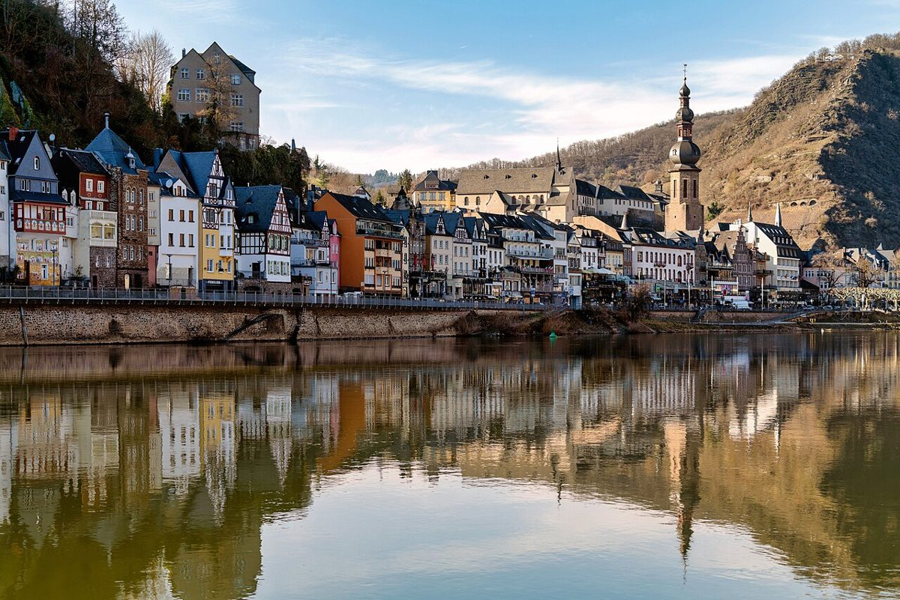

Cochem an der Mosel: Ein märchenhaftes Reiseziel in Deutschland

Cochem an der Mosel ist eines der schönsten Reiseziele in Deutschland. Die malerische Stadt bezaubert mit ihrer mittelalterlichen Burg, steilen Weinbergen und dem romantischen Fluss. Hier findest du alles, was einen perfekten Urlaub ausmacht: Geschichte, Natur, Wein und leckeres Essen.
Anreise nach Cochem
Cochem ist sehr gut erreichbar. Mit dem Auto fährst du über die A48 oder A61, die Anbindung ist hervorragend. Auch mit dem Zug ist Cochem gut angebunden, der Bahnhof liegt zentral. Wer mag, kann sogar mit dem Schiff anreisen – die Mosel ist eine beliebte Route für Flusskreuzfahrten.
Beste Reisezeit
Die beste Zeit für einen Besuch in Cochem ist von Mai bis Oktober. Im Sommer kannst du die Weinberge in voller Pracht bewundern und auf den Terrassen der Weinstuben sitzen. Der Herbst ist besonders charmant, wenn die Weinlese beginnt und die Landschaft in warmen Farben leuchtet. Im Winter lohnt sich ein Besuch für den Weihnachtsmarkt mit seiner gemütlichen Atmosphäre.
Highlights in Cochem
1. Reichsburg Cochem: Die majestätische Burg thront über der Stadt und bietet einen atemberaubenden Blick über die Mosel. Führungen durch die historischen Gemäuer sind ein Muss.
2. Moselpromenade: Schlendere entlang des Flusses, genieße die Aussicht und entdecke charmante Cafés.
3. Senfmühle: Hier wird noch traditioneller Senf hergestellt – eine Kostprobe lohnt sich!
4. Weinberge: Wandere durch die steilen Weinberge oder buche eine Weinprobe in einem der vielen Weingüter.
5. Enderttor: Das mittelalterliche Stadttor ist eines der letzten erhaltenen Bauwerke der alten Stadtmauer.
Essen in Cochem
Die Moselregion ist bekannt für ihre kulinarischen Spezialitäten. Probier unbedingt Zwiebelkuchen (besonders im Herbst), Moselwein (vor allem Riesling) und Gefillde (traditionelle Kartoffelklöße). In den gemütlichen Weinstuben und Restaurants der Altstadt wird regionale Küche serviert – einfach lecker!
Cochem ist ein Ort, der verzaubert. Egal, ob du Kultur, Natur oder Genuss suchst – hier wirst du fündig. Pack die Kamera ein und lass dich von der Schönheit der Mosel begeistern!
Haiktec
- Abenteuer im Traumland: 7 zauberhafte Gute-Nacht-Geschichten für Kinder von 3-8 Jahren
- Umzugskosten-Tracker & Renovierungsplaner für Selbstständige
- Der Gemüsegarten für Einsteiger: 7 einfache Schritte zur eigenen Ernte
Text mit KI erstellt und automatisch geprueft.